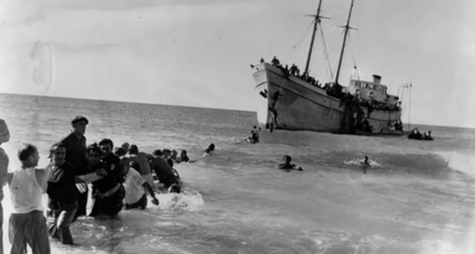
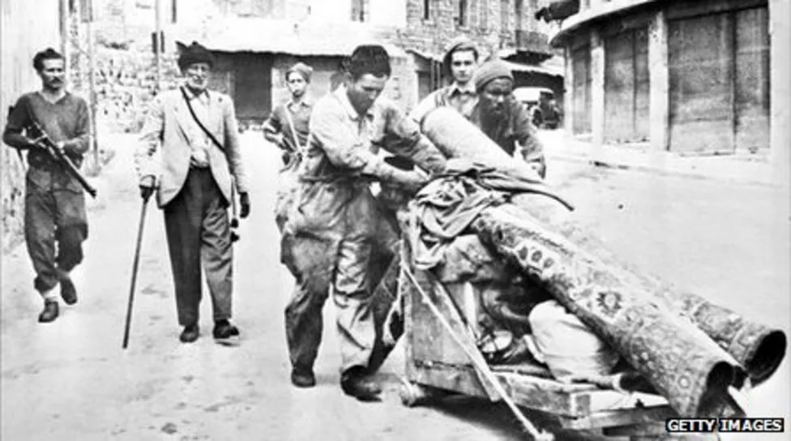

1917
Britain seizes Palestine from Ottomans. Gives support to "national home for the Jewish people" in Palestine through the Balfour Declaration, along with an insistence that "nothing shall be done which may prejudice the civil and religious rights of existing non-Jewish communities"..
1920
San Remo Allied Powers conference grants Palestine to Britain as a mandate, to prepare it for self-rule. European Jewish migration, which increased in the 19th century, continues.
1922
Britain separates Transjordan from Mandate Palestine, forbids Jewish settlement in former..
FOREIGN TERRORIST GROUP DESIGNATION
The US State Department designated HAMAS as a foreign terrorist organization in October 1997.

1939
British government White Paper seeks to limit Jewish migration to Palestine to 10,000 per year, excepting emergencies.
1940s
Nazi Holocaust of the Jews in Europe prompts efforts at mass migration to Palestine. Jewish armed groups in pursuit of independent Jewish state fight British authorities.
1947
United Nations recommends partition of Palestine into separate Jewish and Arab states, with international control over Jerusalem and its environs.
Independence
1948
Israel declares independence as British mandate ends. Admitted to United Nations.

Thousands of Palestinians fled or were driven from their homes in the war that followed Israel's independence
1948-1949
First Arab-Israeli war. Armistice agreements leave Israel with more territory than envisaged under the Partition Plan, including western Jerusalem. Jordan annexes West Bank and eastern Jerusalem, Egypt occupies Gaza. Around 750,000 Palestinian Arabs either flee or are expelled out of their total population of about 1,200,000.
1949-1960s
Up to a million Jewish refugees and immigrants from Muslim-majority countries, plus 250,000 Holocaust survivors, settle in Israel.
1948-1977
Centre-left dominates coalition governments, initially under Prime Minister David Ben-Gurion (1948-54; 1955-63). Promotes a self-sufficient, agrarian and secular Jewish democracy with a non-aligned foreign policy.
Suez Crisis
1956-1957
Israel colludes with Britain and France to invade Egypt during the Suez Crisis, in order to re-open canal to Israeli shipping and end armed incursions by Palestinians from Sinai. UN buffer force set up in Sinai and Gaza, Israeli shipping allowed through Suez Canal.

Kibbutzim - communes based on socialist principles - were central to the development of Israel
1957
Israel begins to build a large nuclear reactor at Dimona in the Negev desert, with French assistance. This becomes the basis for the country's officially unconfirmed nuclear weapons programme ten years later.
1961
Trial and execution of Nazi war criminal Adolf Eichmann, whom Israeli agents kidnapped from Argentina.
1962
Improving relations and concerns about the Middle Eastern balance of power prompt the United States to sell Israel missiles. When France halts arms supplies to Israel in 1966, the United States increases sales.
1964
National Water Carrier completed, to bring water from the River Jordan to the Negev. Tensions rise with Arab neighbours over Jordan water allocations.
1966
SY Agnon is joint winner of the Nobel Prize for Literature.
Six Day War
1967
June - After months of tension, including border skirmishes, Egypt's expulsion of the UN buffer force from Sinai and its closure of the Straits of Tiran to Israeli shipping, Israel launches a pre-emptive attack on Egypt, and Jordan and Syria join the war. The war lasts six days and leaves Israel in control of east Jerusalem, all of West Bank, Gaza, Golan Heights and Sinai. Jewish settlements are set up in all of these areas in coming years, with government approval .
1972
Palestinian "Black September" gunmen take the Israeli team hostage at the Munich Olympics. Two of the athletes are murdered at the site and nine more killed during a failed rescue attempt by the German authorities.
1973
October - Egypt and Syria launch co-ordinated attack against Israeli forces in the occupied Sinai and Golan Heights in the Yom Kippur or October War. Israel prevails, but only after suffering significant losses. Public mood turns against dominant Labour Party.
1974
Gush Emunim (Block of the Faithful) movement formed to promote Jewish religious settlements on the West Bank.
1975
UN General Assembly adopts a resolution describing Zionism as a form of racism. Rescinded in 1991.
1976
March - Mass protests by Israeli Arabs at government attempts to expropriate land in the Galilee area of northern Israel. Six Arab citizens were killed in clashes with security forces. The events are commemorated annually as Land Day.
1976
July - Israeli commandos carry out a raid on Entebbe Airport in Uganda to free more than 100 mostly Israeli and Jewish hostages being held hostage by German and Palestinian gunmen.
Camp David Accord
1977
May - Menachem Begin's right-wing Likud party wins surprise election victory, partly by harnessing non-European Jews' resentment at political hegemony of European-origin Jews. Launches economic liberalisation, brings religious Jewish parties into mainstream, and encourages settlements.
1977
November - Egyptian President Anwar Sadat visits Jerusalem and begins the process that leads to Israel's withdrawal from Sinai and Egypt's recognition of Israel in the Camp David Accords of 1978. Accords also pledge Israel to expand Palestinian self-government in the West Bank and Gaza.
1981
June - Israeli Air Force raid destroys nuclear reactor at Osirak in Iraq.
Invasion of Lebanon
1982
June - Israel invades Lebanon in order to expel Palestine Liberation Organisation (PLO) leadership after assassination attempt by small Palestinian militant group on Israeli ambassador to London.
1982
September - Massacre of Palestinians in the Sabra and Shatila camps in Beirut by Israel's Christian Phalangist allies. Government commission finds Defence Minister Ariel Sharon indirectly responsible and recommends his removal from office. Mass protests against massacre in Israel galvanise anti-war movement.
1984
July - Elections lead to a hung parliament and uneasy coalition between Likud and Labour, whose leader Shimon Peres alternates as prime minister with Likud's Yitzhak Shamir.
1984
November - Covert mass airlift of Ethiopia's Jews begins. Operation repeated in 1991.
1985
Austerity programme tackles hyper-inflation and stabilises currency, introducing New Israeli Shekel.
1985
June - Israel withdraws from most of Lebanon but continues to occupy narrow "security zone" along border.
1986
Former nuclear technician Mordechai Vanunu reveals detail of Israel's nuclear weapons programme to British press.
Uprising
1987
December - First Intifada uprising begins in Occupied Territories. Muslim Brotherhood in Gaza forms Hamas movement, which rapidly turns to violence against Israel
1988
September - Israel becomes one of only eight countries at the time to have capability independently to launch satellites with Ofek reconnaissance probe.
1990
Soviet Union allows Jews to emigrate, leading to about a million ex-Soviet citizens moving to Israel.
1991
January - Gulf War. Iraq fires 39 Scud missiles at Israel in failed attempt to regionalise conflict. Israel refrains from responding at US request.
1991
October - US-Soviet sponsored Madrid conference brings Israel, Lebanon, Syria, Jordan and Palestinian representatives together for first time since 1949. Sets in motion talks to normalise relations. Yitzhak Shamir's reluctant participation, under US pressure, brings down his minority government
1992
Labour returns to power under Yitzhak Rabin. Pledges to halt Jewish settlement expansion programme, opens secret talks with PLO.
Oslo Declaration
1993
Prime Minister Rabin and PLO leader Yasser Arafat sign Oslo Declaration to plot Palestinian self-government and formally end First Intifada. Violence by Palestinian groups that reject Oslo Declaration continues.
1994
May-July - Israel withdraws from most of Gaza and the West Bank city of Jericho, allowing Yasser Arafat to move PLO administration from Tunis and set up Palestinian National Authority.
1994
October - Jordan and Israel sign peace treaty.
1994
December - Yitzhak Rabin, Yasser Arafat and Israeli Foreign Minister Shimon Peres jointly awarded Nobel Peace Prize.
1995
September - Mr Rabin and Yasser Arafat sign Interim Agreement for transfer of further power and territory to Palestinian National Authority. Forms basis for 1997 Hebron Protocol, 1998 Wye River Memorandum and internationally-sponsored "Road Map for Peace" of 2003.
1995
November - Jewish extremist shoots Yitzhak Rabin dead in Tel Aviv. Shimon Peres takes over as prime minister.
1996
May - Likud returns to power under Benjamin Netanyahu, pledges to halt further concessions to Palestinians. Nonetheless signs Hebron Protocol and Wye River Memorandum. Settlement expansion resumes.
1999
May - Labour-led coalition elected under Ehud Barak, pledges to move ahead with talks with Palestinians and Syria.
Pullout from Lebanon
2000
May - Israel withdraws from southern Lebanon, although Lebanon disputes status of Shebaa Farms area.
2000
July - Talks between Prime Minister Barak and Yasser Arafat break down over timing and extent of proposed further Israeli withdrawal from the West Bank.
2000
September - Likud leader Ariel Sharon visits Jerusalem site known to Jews as the Temple Mount and to Muslims as Al-Haram al-Sharif. Palestinian protests escalate into new wave of violence.
2001
January - Failure of last-ditch efforts at restarting Israeli-Palestinian talks in Taba, Egypt, Ehud Barak loses elections to Ariel Sharon, who declines to continue talks.
2002
March-May - Israeli army launches Operation Defensive Shield on West Bank after spate of Palestinian suicide bombings. Largest military operation on West Bank since 1967.
2002
June - Israel begins building barrier in and around West Bank. Israel says barrier aimed at stopping Palestinian attacks; Palestinians see it as a tool to grab land. Route is controversial as frequently deviates from pre-1967 ceasefire line into West Bank.
2003
June - Israel begins building barrier in and around West Bank. Israel says barrier aimed at stopping Palestinian attacks; Palestinians see it as a tool to grab land. Route is controversial as frequently deviates from pre-1967 ceasefire line into West Bank.
2004
July - International Court of Justice issues advisory opinion that West Bank barrier is illegal.
Withdrawal from Gaza
2005
September - Israel withdraws all Jewish settlers and military personnel from Gaza, while retaining control over airspace, coastal waters and border crossings.
2006
January - Ariel Sharon incapacitated by stroke. He dies in 2014, never having emerged from a coma. Succeeded as prime minister by Ehud Olmert. Hamas Islamist group wins Palestinian parliamentary elections. Rocket attacks on Israel from Gaza escalate. Met with frequent Israeli raids and incursions over following years
2006
June - Hamas gunmen from Gaza take Israeli soldier Gilad Shalit hostage, demanding release of Palestinian prisoners. Major clashes between Israel and Hamas in Gaza follow.
2006
July-August - Israeli incursion into Lebanon, in response to deadly Hezbollah attack and abduction of two soldiers, escalates into Second Lebanon War. Government faces criticism over conduct of war, which left Hezbollah forces largely intact
2007
September - Israeli Air Force destroys nuclear reactor in Deir ez-Zor, Syria, which Israel formally acknowledges in 2018.
2007
November - Annapolis Conference for first time establishes "two-state solution" as basis for future talks between Israel and Palestinian Authority.
Gaza invasion
2008
December - Israel launches month-long full-scale invasion of Gaza to prevent Hamas and other groups from launching rockets.
2009
January - Discovery of major offshore natural gas deposits.
2009
February - Right-wing parties prevail in elections, Likud leader Benjamin Netanyahu forms government.
2010
May - Nine Turkish pro-Palestinian activists killed in clashes during Israeli boarding of ships attempting to break blockade of Gaza. Relations with Turkey approach breaking point. Israel apologises for deaths in 2013.
2010
September - Direct talks resume between Israel and the Palestinian Authority, only to falter over the question of settlements.
2011
Summer-Autumn - Rising prices prompt major protests. Government improves competition in food market and makes cheaper housing more available.
2011
October - Hamas release Israeli soldier Gilad Shalit in exchange for 1,027 prisoners in deal brokered by Germany and Egypt.
2012
November - Israel launches week-long military campaign against Gaza-based armed groups following months of escalating rocket attacks on Israeli towns.
2013
March - Mr Netanyahu replaces most religious Jewish groups with centrist and secular parties in government after the latter's strong showing in January elections.

Israel was an early adopter of nuclear technology but it has been secretive about its assets, such as the Dimona nuclear plant
2013
July - Talks resume with Palestinian Authority under US auspices, but reach no conclusions. 2013 December - Israel, Jordan and Palestinian Authority sign agreement to save the Dead Sea from drying up by pumping water from the Red Sea.
2014
January - Energy and Water Minister Silvan Shalom attends renewable energy conference in Abu Dhabi, leading a business delegation in first visit to United Arab Emirates since 2010.
2014
July-August - Israel responds to attacks by armed groups in Gaza with a military campaign by air and land to knock out missile launching sites and attack tunnels. Clashes end in uneasy Egyptian-brokered ceasefire in August.
Netanyahu's fourth government
2015
May - Prime Minister Netanyahu forms a new coalition government after March elections with right-wing Bayit Yehudi (Jewish Home) party. Another right-wing party, Yisrael Beitenu, joins the following year.
2015
October - Israeli couple shot dead in their car in occupied West Bank. It is one of the first incidents in what would become a wave of shootings, stabbings and car-rammings by Palestinians or Israeli Arabs.
2015
November - Israel suspends contact with European Union officials in talks with Palestinians over EU decision to label goods from Jewish settlements in the West Bank as coming not from Israel but from settlements.
2016
June - Israel and Turkey reach agreement over 2010 Gaza flotilla raid and normalise relations.
2016
September - US agrees military aid package worth $38bn (£28bn) over next 10 years for Israel, largest such deal in US history. Previous pact, set to expire in 2018, saw Israel get $3.1bn annually.

The US consulate in Jerusalem will serve as the US embassy from May 2018, until a new complex is built.
2016
December - Israel suspends working ties with 12 countries that voted for a Security Council resolution condemning settlement building, after the US for the first time abstained from the vote rather than using its veto.
Trump thaw
2017
February - Parliament passes a law which retroactively legalises dozens of Jewish settlements built on private Palestinian land in the West Bank.
2017
June - Work begins on the first new Jewish settlement in the West Bank for 25 years.
UNESCO votes to declare the Old City of Hebron a Palestinian World Heritage site, a move that Israel complains ignores the city's Jewish heritage.
2017
December - US President Donald Trump recognises Jerusalem as the capital of Israel, upsetting the Arab world and some Western allies.
The following March, he recognises Israeli sovereignty over the Golan Heights, which Israel seized from Syria in the 1967 war and later annexed. The international community does not recognise Israeli sovereignty.
2018
July-November - UN and Egypt attempt to broker a long-term ceasefire between Israel and Hamas amid an upsurge in violence on the Gaza border from March.
2019 April - 2020 March
Three sets of parliamentary elections pit Mr Netanyahu against a centrist alliance led by former armed forces chief of staff Benny Gantz, but do not produce a clear majority.
2019
November - US says it no longer considers Israeli settlements on the West Bank to be illegal.
2020 Apri
Benjamin Netanyahu and Benny Gantz agree to form a national unity government to deal with the Covid-19 pandemic.
2020 August
The United Arab Emirates become the first Gulf state to establish diplomatic relations with Israel.
2021 May
Unrest over forced evictions of Palestinians in east Jerusalem leads to conflict with Hamas and communal violence in Israeli cities.
2021 June
Naftali Bennett of the Jewish nationalist Yamina party forms a broad coalition to oust Benjamin Netanyahu.